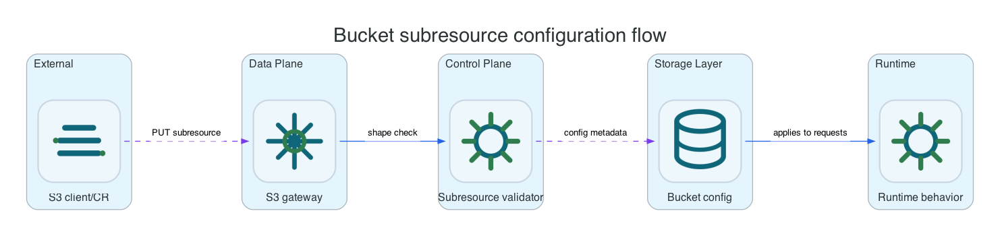

Bucket Subresources
Subresources store product-local configuration. AWS-only managed integrations are either rejected, ignored safely, or mapped to a Li9-local equivalent when implemented.
Common AWS CLI setup
Run this once for the target bucket. Replace li9-s3-runtime and app-data with your namespace and S3Bucket resource name.
export NS=li9-s3-runtime
export BUCKET_CR=app-data
export BUCKET="$(oc -n "$NS" get s3bucket "$BUCKET_CR" -o jsonpath='{.status.bucketName}')"
export SECRET="$(oc -n "$NS" get s3bucket "$BUCKET_CR" -o jsonpath='{.status.secretName}')"
export ENDPOINT="$(oc -n "$NS" get secret "$SECRET" -o jsonpath='{.data.AWS_ENDPOINT_URL}' | base64 -d)"
export AWS_ACCESS_KEY_ID="$(oc -n "$NS" get secret "$SECRET" -o jsonpath='{.data.AWS_ACCESS_KEY_ID}' | base64 -d)"
export AWS_SECRET_ACCESS_KEY="$(oc -n "$NS" get secret "$SECRET" -o jsonpath='{.data.AWS_SECRET_ACCESS_KEY}' | base64 -d)"
export AWS_REGION="$(oc -n "$NS" get secret "$SECRET" -o jsonpath='{.data.AWS_REGION}' 2>/dev/null | base64 -d || true)"
export AWS_REGION="${AWS_REGION:-us-east-1}"
export AWS_EC2_METADATA_DISABLED=true
li9s3() {
aws --endpoint-url "$ENDPOINT" --region "$AWS_REGION" --no-verify-ssl s3api "$@"
}To verify the setup, run:
li9s3 head-bucket --bucket "$BUCKET"
li9s3 list-objects-v2 --bucket "$BUCKET" --max-keys 1Bucket Subresources
Bucket subresources store configuration on the Li9 S3 metadata plane and expose AWS-compatible request and response shapes. Use them when an application or automation already speaks S3 and expects configuration to be available through aws s3api. AWS-managed integrations are not silently emulated: they are either implemented as product-local behavior, rejected during validation, or stored only when the setting is a compatibility no-op.

| Subresource | Current Behavior | How To Verify |
|---|---|---|
| CORS | Stored and enforced for S3 preflight behavior. | put-bucket-cors, get-bucket-cors, then browser/API preflight test. |
| Website | Index, error document, redirects, and object redirect metadata are served through the gateway when bucket policy allows public reads. | put-bucket-website, upload index.html, then unsigned HTTPS GET. |
| Request payment | Requester Pays configuration round-trips and affects request-payer authorization semantics. It does not create billing records. | put-bucket-request-payment and non-owner access with --request-payer requester. |
| Ownership controls and ACL compatibility | Owner-only ACL paths are accepted for AWS client compatibility; public or non-owner grants are rejected. | get-bucket-ownership-controls, get-bucket-acl, and negative public ACL tests. |
| Metrics, analytics, inventory, intelligent-tiering | Configuration APIs persist locally. Inventory and metadata-table output are generated by healing-service where implemented. | List configuration APIs and report bucket inspection. |
: "${APP_ORIGIN:?set the allowed application origin URL}"
cat > /tmp/cors.json <<EOF
{
"CORSRules": [
{
"AllowedMethods": ["GET", "PUT"],
"AllowedOrigins": ["${APP_ORIGIN}"],
"AllowedHeaders": ["*"],
"ExposeHeaders": ["ETag"]
}
]
}
EOF
li9s3 put-bucket-cors --bucket "$BUCKET" --cors-configuration file:///tmp/cors.json
li9s3 get-bucket-cors --bucket "$BUCKET"
li9s3 put-bucket-website --bucket "$BUCKET" --website-configuration '{"IndexDocument":{"Suffix":"index.html"},"ErrorDocument":{"Key":"error.html"}}'
li9s3 get-bucket-website --bucket "$BUCKET"
li9s3 put-bucket-request-payment --bucket "$BUCKET" --request-payment-configuration Payer=Requester
li9s3 get-bucket-request-payment --bucket "$BUCKET"Operational Notes
Use declarative operator CRs for Li9-managed automation such as lifecycle, archive policy, replication, and generated credentials. Use raw bucket subresource APIs when the caller is an S3 application, SDK, backup tool, or migration job that already manages bucket settings. Unsupported AWS-only services fail predictably with S3 XML errors rather than creating a misleading local configuration.